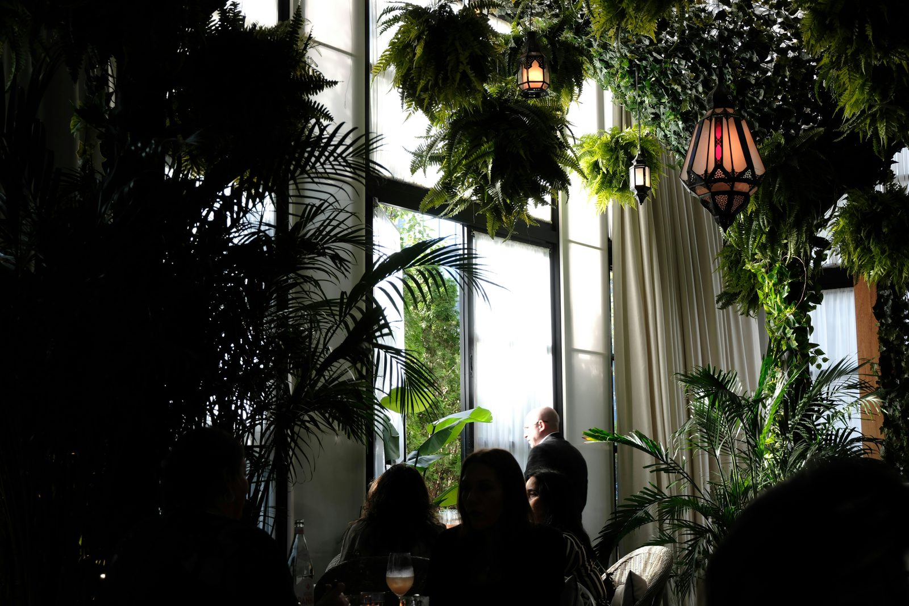

Come una catena di tre ristoranti ha automatizzato prenotazioni, messaggi e menu con un sistema AI integrato, recuperando 12 coperti a serata e aggiungendo il 12% sul valore medio coperto.

Una catena familiare con tre locali nell'area bolognese: cucina tradizionale emiliana, un posizionamento solido e una clientela affezionata. Dal martedì alla domenica, i tre locali insieme gestiscono circa 180 coperti a serata.
Il problema non era la qualità del cibo. Era tutto quello che succedeva prima e dopo il pasto: le telefonate per prenotare che squillavano nel pieno del servizio, i messaggi WhatsApp senza risposta, lo staff che interrompeva il lavoro per rispondere a domande sul menu, le serate sold-out con posti liberi perché nessuno aveva aggiornato il gestionale. Tre locali, tre numeri diversi, nessuna visione centralizzata.
"Avevamo tre telefoni che squillavano contemporaneamente durante il sabato sera. La mia responsabile di sala passava 40 minuti a ora a rispondere alle prenotazioni invece di stare in sala. A fine serata scoprivamo che avevamo lasciato 12 posti vuoti per disdette arrivate su WhatsApp che nessuno aveva visto."
Altalogik ha sviluppato un sistema integrato su tre livelli, pensato per operare in autonomia senza richiedere intervento manuale sulle attività di primo contatto.
Agente AI vocale h24: risponde alle chiamate in entrata, gestisce prenotazioni, conferme e disdette, aggiorna in tempo reale il calendario dei coperti. Fuori orario, registra il messaggio e invia una notifica allo staff. Il sabato sera nessun telefono squilla più in sala.
Agente WhatsApp Business: risponde in automatico ai messaggi su tutti e tre i numeri aziendali. Conferma prenotazioni, risponde a domande su allergeni e piatti del giorno, invia promemoria 2 ore prima della prenotazione riducendo drasticamente i no-show. Lo staff subentra solo quando è necessario il giudizio umano.
Menu digitale AI: accessibile via QR code al tavolo, registra i piatti più consultati, suggerisce abbinamenti vino-portata, propone il dessert del giorno nel momento giusto. Ogni interazione costruisce un dataset anonimizzato sulle preferenze della clientela visibile in dashboard.
Dashboard centralizzata: un unico pannello per tutti e tre i locali con prenotazioni in tempo reale, coperti disponibili, andamento delle serate, performance del menu. Per la prima volta, il titolare gestisce un sistema unico con tre punti operativi invece di tre ristoranti separati.
posti persi per disdette non gestite: da 8-15 coperti a serata grazie ai promemoria automatici
valore medio coperto nel primo mese grazie all'upsell del menu digitale AI
tempo staff su prenotazioni e informazioni a sera: da 35-50 minuti per locale
"Il titolare non gestisce più tre ristoranti separati. Gestisce un sistema unico con tre punti operativi."